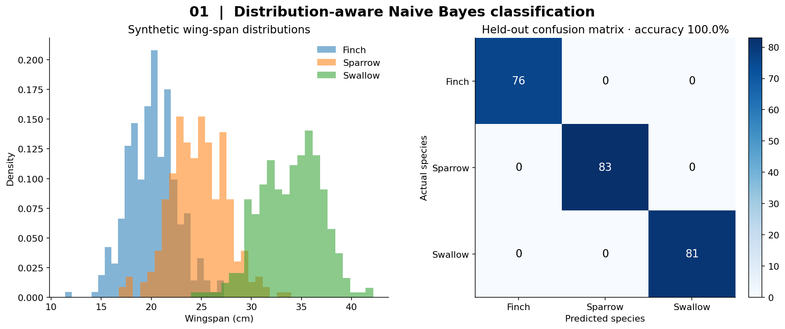
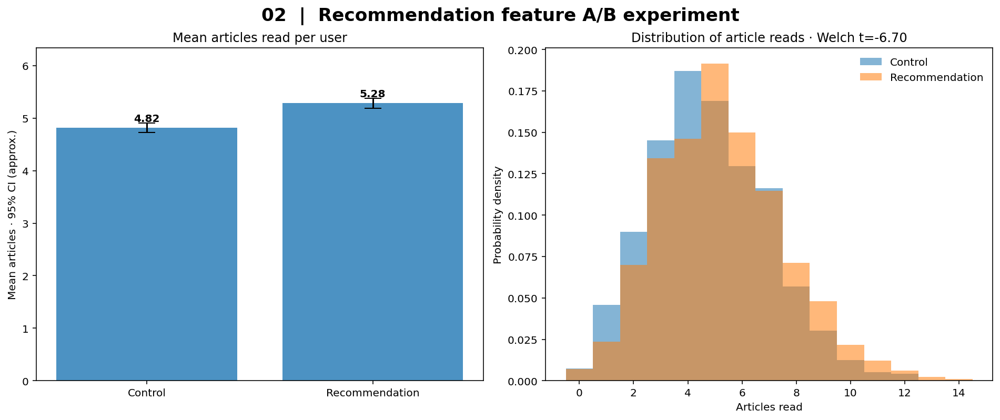
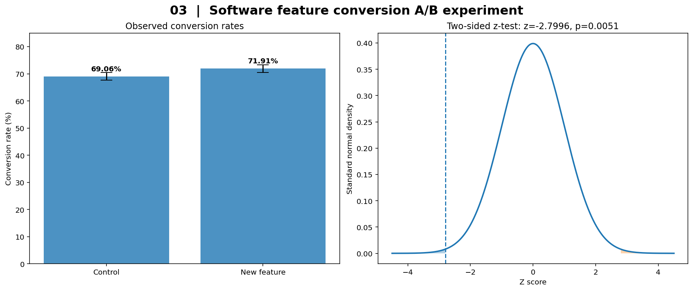

Reproducible Python portfolio · Asah 2026
From probability to product decisions.
Three independently implemented statistical case studies exploring synthetic bird classification, recommendation experiments, and software feature conversion. Built with Python, NumPy, SciPy, pandas, and reproducible Jupyter notebooks.
Probability distributionsNaive BayesWelch's t-testTwo-proportion z-testHypothesis testing
3Executable case studies
5Automated sanity checks
4.0/4.0Official Dicoding review · Advanced
15/15Official Knowledge Check
Case study collection
Experiments & visual evidence
Every figure below is generated by running the public portfolio code. Original graded submission code and answer keys are not part of this public package.
01 / CLASSIFICATION
Bird species · Distribution-aware Naive Bayes
Class-conditional Gaussian, Uniform, and Binomial likelihoods; estimated priors; stable log-probability classification; held-out evaluation. The 100% result reflects intentionally separable synthetic classes, not production accuracy.

Explore notebook source · Executed output preview
02 / EXPERIMENTATION
Recommendation A/B test · Welch's t-test
Independent Poisson-distributed article-read counts, mean comparison, unequal-variance t-statistic, Satterthwaite degrees of freedom and two-sided significance assessment.

Explore notebook source · Executed output preview
03 / PRODUCT ANALYTICS
Software conversion · Two-proportion z-test
Aggregated synthetic conversion counts, pooled standard error, two-sided p-value, and comparison of statistical versus practical significance.

Explore notebook source · Executed output preview
Verified educational milestone
Dicoding · Advanced (4.0 / 4.0)
Official assessment
Both implementation and Knowledge Check criteria were accepted at Advanced level. All 15 theory responses were correct across the three subject areas.
Dicoding Academy 831 · Certificate page
18 November 2026 · Submission ID 5135103
Reviewer-inspired improvements
Numerically stable log-likelihoods, attention to optional-stopping bias in experiments, and using Welch's test when equal variances cannot be assumed.
Read methodology and limitations
All case-study datasets are synthetic. The public portfolio is a new educational demonstration and is not the original graded submission or its answer key.